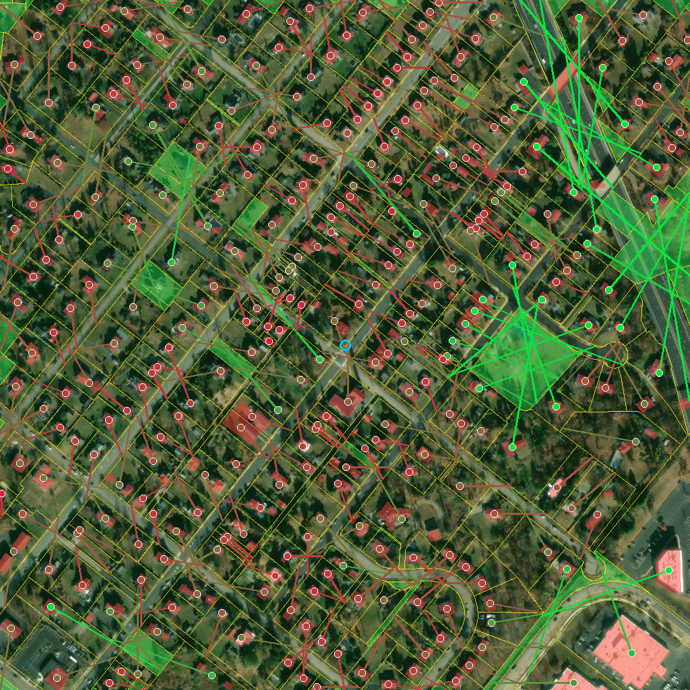
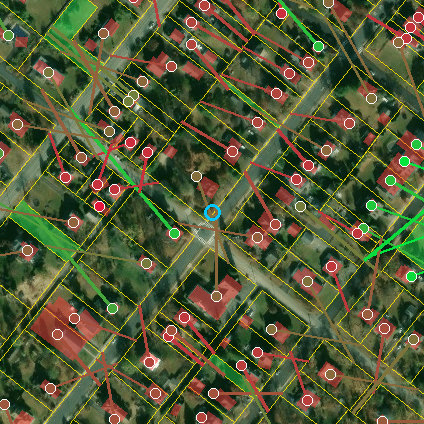
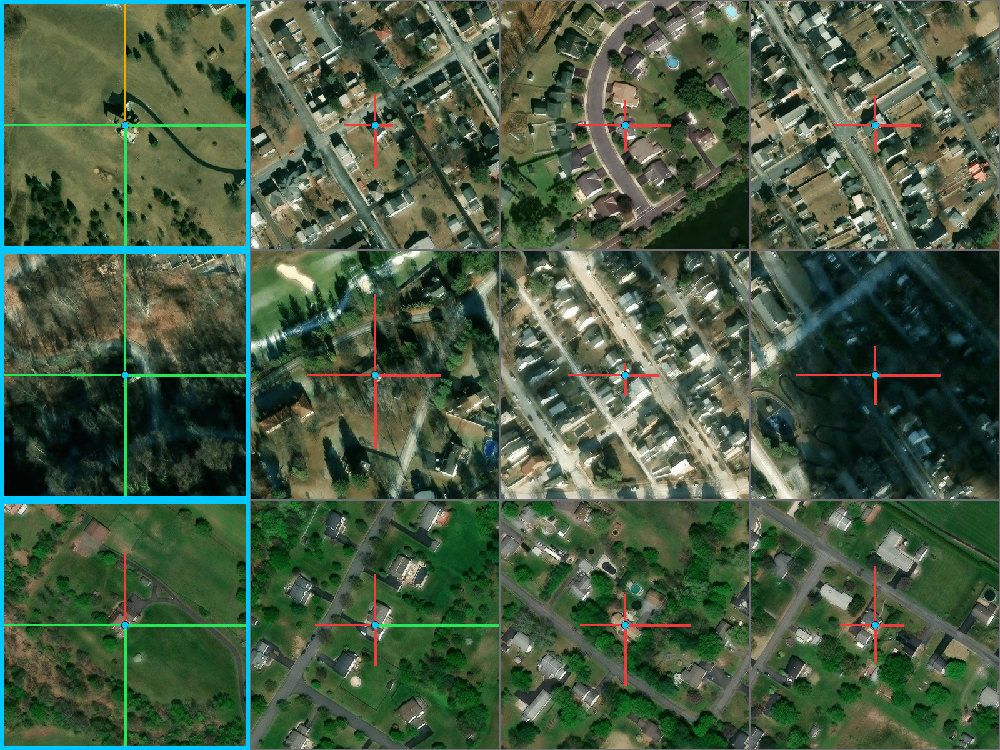
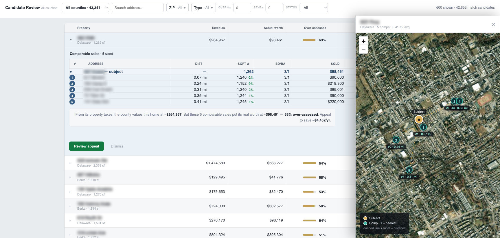

The pipeline reads the county’s own records and flags every home taxed far above what nearby sales support. Then it turns to high-resolution aerial imagery and measures the view itself — casting sightlines from each home until they hit a neighbor’s building — to answer the only question left: is the premium justified, or not?
A home overlooking open land may genuinely be worth more than homes of the same size and age — for a reason square footage and bedroom counts never capture. Every real-estate agent says it: you’re paying for the view. Nobody measures it. This pipeline does.
Each home is anchored to its actual building using FEMA’s nationwide building-footprint inventory, matched by street address — because grabbing the biggest footprint on the parcel finds barns, and the parcel’s center point lands in the yard. From that anchor, rays sweep outward across the aerial imagery until each one hits a neighboring structure. Streets and empty lots don’t block a view; only an actual building does. The farther the rays run, the more the home actually sees.



Then the comparison that answers the question. A flagged home’s openness is set against the average of its own comparable sales — beat it by 15% or more and the premium has a defense:
Tested county-wide, openness does not predict which homes get over-assessed — no relationship. So the view score is never used to hunt candidates; it’s used to judge them, one home at a time, exactly as shown above. Publishing the null is the point: the “it’s just the view” excuse has been measured, and it only saves the homes that actually have one.
This owner hands the county roughly $4,000 a year in tax on value that recent sales say isn’t there.
That estimate uses 44.8 mills, the median combined rate across the county’s 62 municipalities. The owner’s true rate depends on their township and school district.
No leaks, no records requests. Three public sources: the county’s own GIS service (every parcel’s size, bedrooms, bathrooms, assessment, and location), Redfin’s sold listings (what real buyers just paid, ZIP by ZIP), and the state’s published Common Level Ratio — the 30.76% conversion rate that turns any assessment into the market value the county is implicitly claiming. An assessment of $150,000 is the county saying “this home is worth about $488,000.” Almost nobody reads it that way. The pipeline does.
For each of the county’s residential parcels it hunts for genuinely comparable sales — within one mile, within ±20% of the home’s living area, within one bedroom and one bathroom, sold in the last 24 months. Homes without enough qualifying sales are dropped rather than guessed at; every flagged home rests on four to six real transactions. Average the comps’ price per square foot, apply it to the subject’s square footage, and compare against the county’s implied value. A gap of 10% or more makes the home an appeal candidate — 38,266 homes showed some gap; 15,036 cleared the 10% bar.
Recency gets the biggest weight in the comp-ranking score on purpose: a sale from three months ago most of a mile away says more about today’s market than a next-door sale from eighteen months ago. Distance still matters — it’s just enforced as a hard one-mile limit rather than used as the main ranking signal.
# How comparable sales are ranked (best 4–6 kept per home): score = 0.45 · recency + 0.30 · size match + 0.15 · bed/bath match + 0.10 · distance # Hard gates — fail any one and the sale is out: within 1.0 mi | living area within ±20% | beds within ±1 baths within ±1.0 | sold within the last 24 months

The whole method hangs on one thing: the county’s public GIS has to publish each home’s living area, because price per square foot is the yardstick. So before writing any code for a new county, I probe its GIS endpoint for a square-footage field under the names counties actually use (SFLA, SQFT_LIVING_AREA, FINISHEDLIVINGAREA, …). No field, no method — the county is marked blocked at the gate, with the reason recorded, instead of half-built.
Green = buildable (living-area field confirmed in the public GIS). Amber = partial — Lehigh’s portal sits behind a CAPTCHA, but backfilling living area from Redfin produced its first candidates. Brown = blocked: no living-area field (Chester, Lancaster, Berks, Luzerne), GIS lacks it and the assessment portal is an offline iasWorld system (Bucks), a passcode-gated portal (Lebanon), or most likely no public field (Delaware).
A new buildable county costs one function: the endpoint URL, its field names, and that county’s Common Level Ratio. The comp matching and the gap math are shared. That boundary is what let the project keep growing — the current build covers seven counties, pulls its comparable sales from recorded deeds instead of a listings site, refuses to value a home against a structurally different one (a condo never gets priced off a single-family house), and ships as the Appeal Manager desktop app shown above.